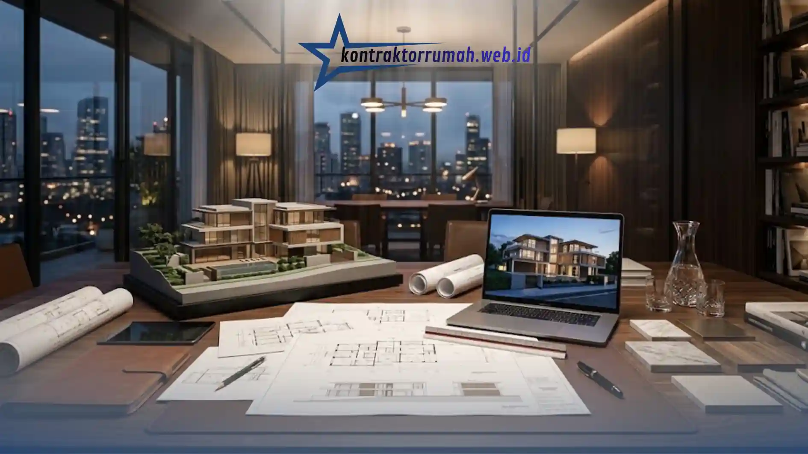

Jasa arsitek rumah untuk gambar 3D memberikan gambaran visual yang lebih realistis mengenai desain rumah sebelum proses konstruksi dimulai. Visualisasi ini membantu pemilik rumah memahami tata ruang, proporsi bangunan, dan estetika desain secara lebih akurat dibandingkan gambar dua dimensi.
Poin Penting
- Gambar 3D membantu pemilik rumah memvisualisasikan desain secara realistis sebelum konstruksi.
- Jasa arsitek profesional dapat menyesuaikan desain dengan kebutuhan fungsional dan anggaran.
- Visualisasi 3D membantu meminimalkan kesalahan desain yang berdampak pada pembengkakan biaya.
- Gambar 3D mempermudah komunikasi antara pemilik rumah, arsitek, dan pelaksana konstruksi.
- Proses pembuatan gambar 3D umumnya melibatkan konsultasi kebutuhan, sketsa awal, hingga revisi desain.
Mengapa Gambar 3D Penting Sebelum Membangun Rumah?
Gambar 3D penting karena memberikan gambaran nyata mengenai bentuk bangunan, proporsi ruangan, dan kombinasi material sebelum konstruksi fisik dilakukan. Dengan visualisasi ini, pemilik rumah dapat menilai apakah desain yang direncanakan benar-benar sesuai dengan ekspektasi, baik dari sisi tata ruang maupun estetika eksterior.
Tanpa gambar 3D, pemilik rumah sering kali hanya mengandalkan gambar denah dua dimensi yang sulit diinterpretasikan oleh orang awam, sehingga rawan terjadi kesalahpahaman antara ekspektasi desain dan hasil akhir bangunan setelah selesai dikerjakan.
Apa Saja Keuntungan Menggunakan Jasa Arsitek untuk Gambar 3D?
Keuntungan utama menggunakan jasa arsitek untuk gambar 3D adalah kemampuan memvisualisasikan desain secara akurat sekaligus mendapatkan masukan teknis dari sisi struktur, fungsi, dan efisiensi ruang.
Arsitek profesional tidak hanya membuat gambar yang estetis, tetapi juga mempertimbangkan aspek teknis seperti pencahayaan alami, sirkulasi udara, dan tata letak yang efisien sesuai kebutuhan penghuni. Selain itu, gambar 3D yang dibuat arsitek biasanya disertai dengan detail material dan skala yang presisi, sehingga dapat langsung dijadikan acuan oleh kontraktor pelaksana.
Keuntungan lainnya adalah kemudahan melakukan revisi desain sebelum konstruksi dimulai. Perubahan pada tahap gambar jauh lebih murah dan cepat dibandingkan perubahan yang dilakukan setelah bangunan fisik mulai dikerjakan.
Bagaimana Gambar 3D Membantu Efisiensi Biaya Konstruksi?
Gambar 3D membantu efisiensi biaya konstruksi dengan meminimalkan kesalahan desain yang baru terdeteksi setelah pembangunan berjalan. Kesalahan semacam ini, seperti ukuran ruangan yang tidak sesuai kebutuhan atau penempatan bukaan yang kurang optimal, sering kali memerlukan biaya tambahan untuk perbaikan di tengah proses konstruksi.

Dengan visualisasi yang matang sejak awal, pemilik rumah dan arsitek dapat mendiskusikan berbagai alternatif material dan tata ruang untuk menyesuaikan desain dengan anggaran yang tersedia, tanpa harus mengorbankan fungsi utama bangunan. Gambar 3D juga mempermudah proses estimasi Rencana Anggaran Biaya (RAB) karena spesifikasi material dan dimensi ruang sudah tergambar secara jelas sejak tahap perencanaan.
Apa Perbedaan Gambar 3D dengan Gambar Kerja Dua Dimensi?
Gambar 3D berfungsi sebagai media visualisasi estetika dan tata ruang, sedangkan gambar kerja dua dimensi berfungsi sebagai acuan teknis pelaksanaan konstruksi di lapangan. Keduanya saling melengkapi dalam proses pembangunan rumah.
Gambar 3D lebih mudah dipahami oleh orang awam karena menampilkan bentuk bangunan secara realistis, lengkap dengan warna, material, dan pencahayaan. Sementara itu, gambar kerja dua dimensi berisi detail teknis seperti ukuran presisi, potongan struktur, dan spesifikasi instalasi yang digunakan oleh tim konstruksi sebagai pedoman kerja harian di lapangan.
Sebuah proyek pembangunan rumah yang baik umumnya membutuhkan kedua jenis gambar tersebut, karena gambar 3D membantu proses pengambilan keputusan desain, sementara gambar kerja memastikan akurasi pelaksanaan di lapangan.
Apa yang Perlu Disiapkan Sebelum Menggunakan Jasa Arsitek?
Sebelum menggunakan jasa arsitek, pemilik rumah sebaiknya menyiapkan kebutuhan fungsional ruangan, anggaran yang tersedia, serta referensi gaya desain yang diinginkan agar proses konsultasi berjalan lebih efisien.
Kebutuhan fungsional mencakup jumlah kamar, luas lahan yang tersedia, serta aktivitas keluarga yang perlu diakomodasi dalam desain rumah. Anggaran yang jelas juga membantu arsitek menyesuaikan pilihan material dan kompleksitas desain agar tetap realistis untuk direalisasikan.
Referensi gaya desain, baik berupa gambar inspirasi maupun deskripsi preferensi pribadi, juga sangat membantu arsitek dalam menerjemahkan keinginan pemilik rumah ke dalam gambar 3D yang sesuai ekspektasi sejak revisi awal.
Menggunakan jasa arsitek untuk membuat gambar 3D memberikan keuntungan berupa visualisasi desain yang realistis, komunikasi yang lebih jelas antara pemilik rumah dan pelaksana konstruksi, serta potensi efisiensi biaya melalui deteksi dini kesalahan desain. Dengan persiapan kebutuhan fungsional dan anggaran yang matang sejak awal konsultasi, proses pembuatan gambar 3D dapat berjalan lebih efisien dan menghasilkan desain rumah yang sesuai ekspektasi pemilik.